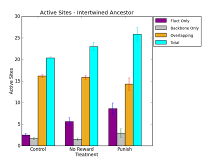

STATUS:
Weekly Status
Last Week:
- Tuesday-Friday of last week was spent in Alberta helping out with the Software Carpentry workshop
- Prepared and submitted the camera-ready extended abstract for Alife. To than end, I added a figure characterizing the task mapping sites of the last common ancestors of the various treatments (attached). It shows significant differences in the number of sites devoted solely to the fluctuating task vs the backbone and overlapping sections.

This Week:
- Performing some evolvability experiments, pitting the last common ancestor of the punishment treatments against the matched controls, to see which lineage would win a tournament to evolve other tasks.
- From Last Week: Run Fitness in Changing Environments tournaments to extract relative fitness information (collaboration with Mark Kauth).